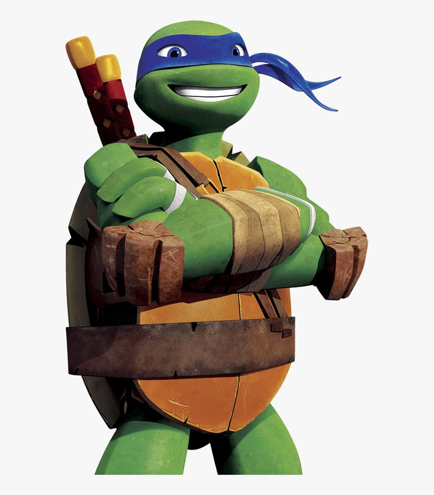
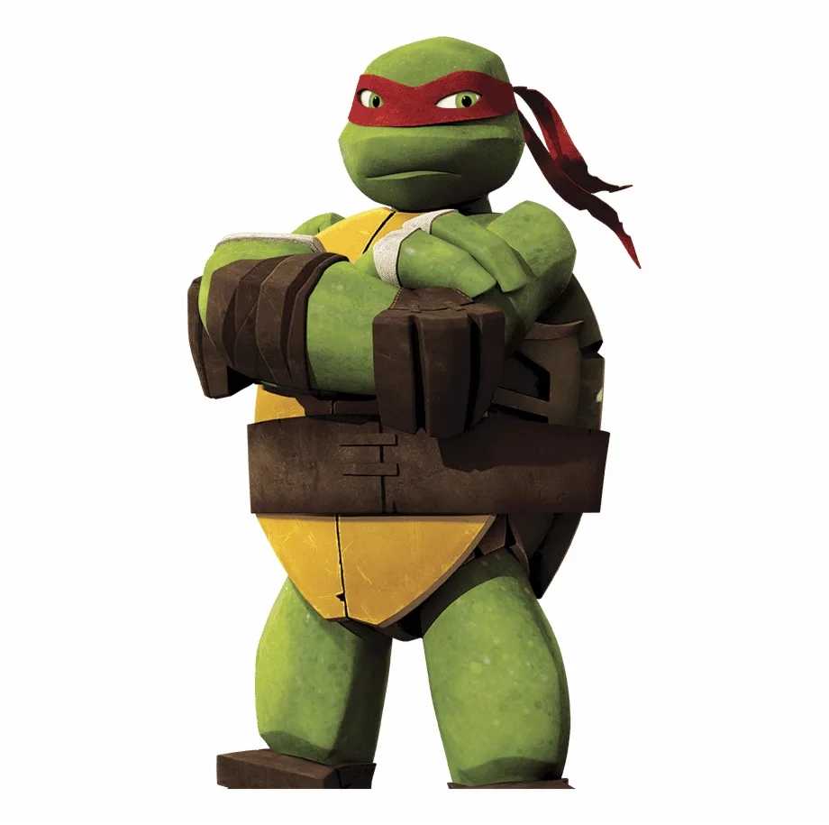
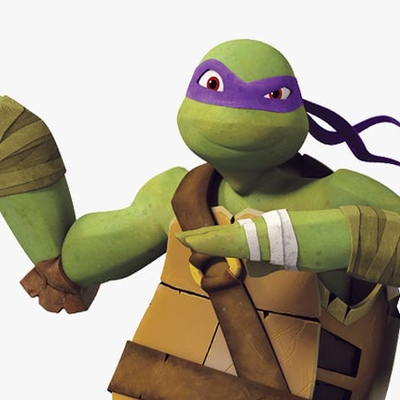
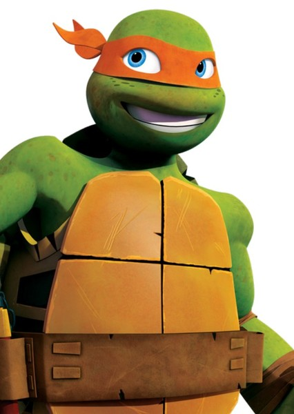
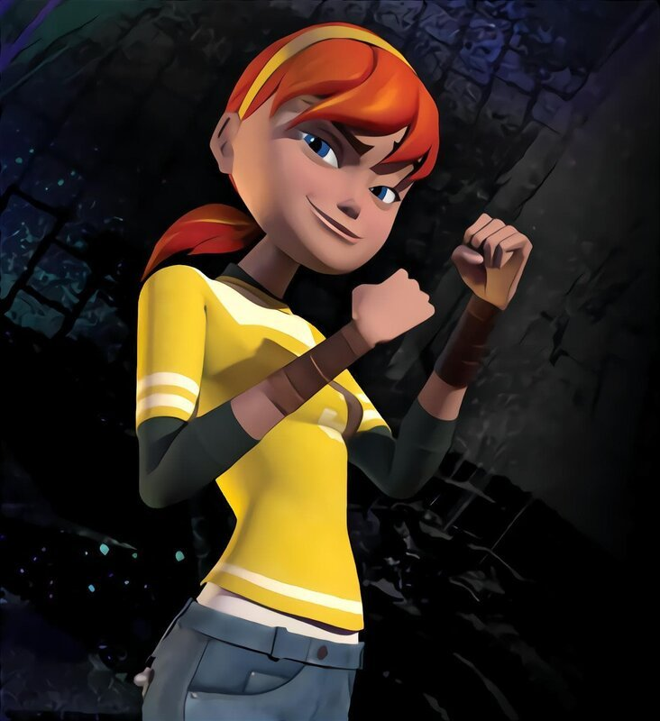

Герои Черепашки-ниндзя

Леонардо
Лидер команды, мастер мечей катана.

Рафаэль
Силач и бунтарь, владеет оружием сай.

Донателло
Гений и техник, владеет бо.

Микеланджело
Шутник и весельчак, владеет нунчаками.

Мастер Сплинтер
Учитель и приёмный отец Черепашек.

Эйприл О'Нил
Друг и союзник Черепашек, журналистка.